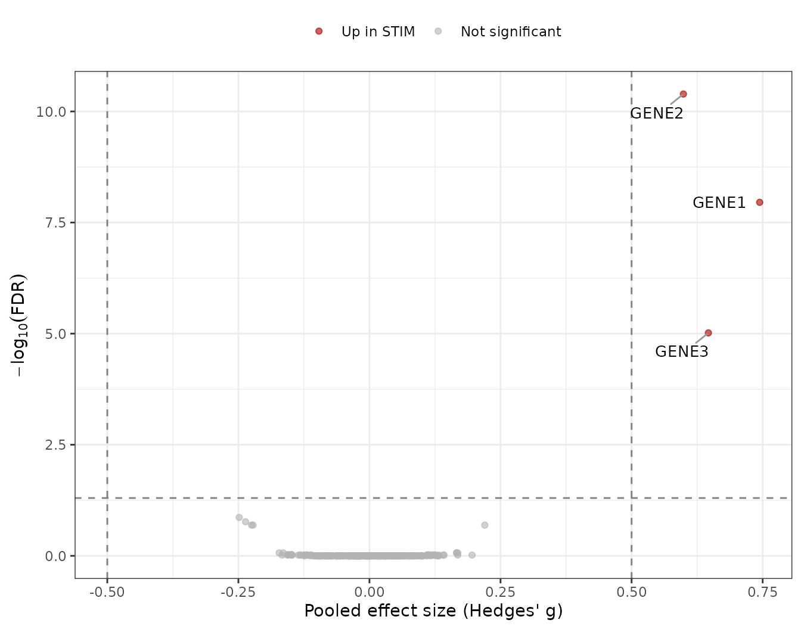
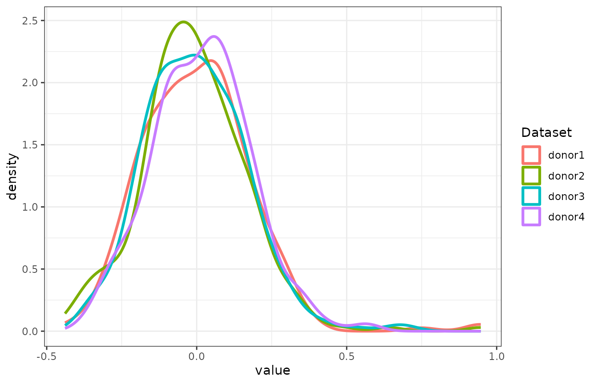
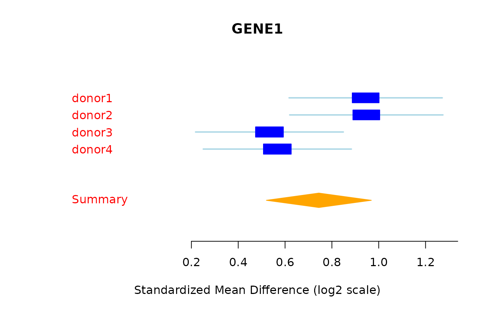

Getting started with scMetaIntegrator
Kalani Ratnasiri
2026-10-19
Source:vignettes/scMetaIntegrator.Rmd
scMetaIntegrator.RmdOverview
scMetaIntegrator (scMI) tests for differential expression in paired single-cell RNA-seq data. Each matched pair, such as one donor measured under two conditions, is treated as one study. Within a pair, scMI compares cells from the two conditions and computes a per-gene effect size (Hedges’ g). It then pools the effect sizes across pairs with random-effects meta-analysis using MetaIntegrator.
This article walks through a complete analysis on simulated data, from checking the pairing to plotting the results. Loading the MetaIntegrator package is required to run scMetaIntegrator.
| Step | Function | What it does |
|---|---|---|
| Validate | confirmPairs() |
Checks that every pair has exactly two samples |
| Subset | completePairSubset() |
Keeps only complete pairs |
| Filter genes | thresholdGenesAcrossPairs() |
Keeps genes expressed in a minimum fraction of cells in every pair |
| Run (simple output) | runscMI() |
Returns one table of pooled results per gene |
| Run (full object) | generateFullMA() |
Returns a MetaIntegrator metaObject for
forest plots, gene scores and leave-one-out filtering |
Data requirements
scMI needs a Seurat v5 object with log-normalized expression in the
data layer and three metadata columns.
| Metadata column | What it holds | Example in this article |
|---|---|---|
| Unique sample ID | One value per sample |
sample (donor1_CTRL) |
| Pairing variable | The value shared by the two samples in a pair |
donor (donor1) |
| Comparison variable | The two conditions to compare |
condition (STIM,
CTRL) |
Every pair must contain exactly two samples, one per condition.
1. Simulate a paired scRNA-seq experiment
We simulate four donors, each sampled under a control and a
stimulated condition, with 80 cells per sample. Three genes
(GENE1 to GENE3) are up-regulated in the
stimulated condition.
set.seed(4)
n_genes = 300
genes = paste0("GENE", seq_len(n_genes))
donors = paste0("donor", 1:4)
conds = c("CTRL", "STIM")
n_cells = 80
de_genes = c("GENE1", "GENE2", "GENE3")
base_mean = rgamma(n_genes, shape = 1, rate = 1)
names(base_mean) = genes
counts_list = list()
meta_list = list()
for (d in donors) {
for (cnd in conds) {
mu = base_mean
if (cnd == "STIM") mu[de_genes] = mu[de_genes] * 3
size_factor = rlnorm(n_cells, 0, 0.2)
m = sapply(size_factor, function(sf) rnbinom(n_genes, mu = mu * sf, size = 2))
sample_id = paste(d, cnd, sep = "_")
cell_ids = paste(sample_id, seq_len(n_cells), sep = "_")
dimnames(m) = list(genes, cell_ids)
counts_list[[sample_id]] = m
meta_list[[sample_id]] = data.frame(sample = rep(sample_id, n_cells),
donor = rep(d, n_cells),
condition = rep(cnd, n_cells),
row.names = cell_ids)
}
}
seu = CreateSeuratObject(counts = do.call(cbind, counts_list),
meta.data = do.call(rbind, meta_list))
seu = NormalizeData(seu)
table(seu$donor, seu$condition)
#>
#> CTRL STIM
#> donor1 80 80
#> donor2 80 80
#> donor3 80 80
#> donor4 80 802. Check the pairing
confirmPairs(seu, uniqueSampleID = "sample", pairingColumn = "donor")
#> [1] TRUETRUE means every donor has exactly two samples. If it
returns FALSE, drop the incomplete pairs with
completePairSubset(), or set
completePairsOnly = TRUE in runscMI() or
generateFullMA().
seu = completePairSubset(seu, uniqueSampleID = "sample", pairingColumn = "donor")3. Choose genes to test
thresholdGenesAcrossPairs() keeps genes detected in at
least percentThreshold of cells in every pair. Passing the
result as thresholdGenes restricts the analysis to those
genes and reduces memory use.
thresholdedGenes = thresholdGenesAcrossPairs(
seuratObject = seu,
uniqueSampleID = "sample",
pairingColumn = "donor",
percentThreshold = 0.01
)
length(thresholdedGenes)
#> [1] 2934. Run scMI
groupOne is the condition whose effect you want to
estimate. groupTwo is the reference, usually the control. A
positive effect size means higher expression in
groupOne.
scMI_output = runscMI(
seuratObject = seu,
uniqueSampleID = "sample",
pairingColumn = "donor",
comparisonGroupColumn = "condition",
groupOne = "STIM",
groupTwo = "CTRL",
thresholdGenes = thresholdedGenes
)
#> Found common probes in 2
#> Found common probes in 3
#> Found common probes in 4
#> Computing effect sizes...
#> Computing summary effect sizes...
#> Computing Fisher's output...
head(scMI_output[order(scMI_output$effectSizeFDR), ])
#> gene effectSize effectSizeFDR effectSizePval effectSizeBF numPairs
#> GENE2 GENE2 0.5988097 4.059006e-11 1.385326e-13 4.059006e-11 4
#> GENE1 GENE1 0.7442910 1.109904e-08 7.576135e-11 2.219807e-08 4
#> GENE3 GENE3 0.6464974 9.617688e-06 9.847462e-08 2.885306e-05 4
#> GENE160 GENE160 -0.2484045 1.363979e-01 1.862087e-03 5.455916e-01 4
#> GENE118 GENE118 -0.2362868 1.709081e-01 2.916520e-03 8.545404e-01 4
#> GENE176 GENE176 -0.2248811 2.032818e-01 4.604003e-03 1.000000e+00 4The columns are the pooled effect size (effectSize), its
p-value and FDR (effectSizePval,
effectSizeFDR), a Bonferroni-adjusted p-value
(effectSizeBF), and the number of pairs that contributed
(numPairs).
The three genes we up-regulated in the simulation should show positive effect sizes.
scMI_output[scMI_output$gene %in% de_genes, ]
#> gene effectSize effectSizeFDR effectSizePval effectSizeBF numPairs
#> GENE2 GENE2 0.5988097 4.059006e-11 1.385326e-13 4.059006e-11 4
#> GENE1 GENE1 0.7442910 1.109904e-08 7.576135e-11 2.219807e-08 4
#> GENE3 GENE3 0.6464974 9.617688e-06 9.847462e-08 2.885306e-05 4Volcano plot
Genes with an FDR below 0.05 and an absolute effect size above 0.5 are colored and labeled. FDR values of 0 are set to 1e-300 so they can be plotted on a log scale.
volcano_df = scMI_output
volcano_df$neg_log10_fdr = -log10(pmax(volcano_df$effectSizeFDR, 1e-300))
volcano_df$category = ifelse(volcano_df$effectSizeFDR < 0.05 & volcano_df$effectSize > 0.5, "Up in STIM",
ifelse(volcano_df$effectSizeFDR < 0.05 & volcano_df$effectSize < -0.5, "Up in CTRL",
"Not significant"))
volcano_df$category = factor(volcano_df$category,
levels = c("Up in STIM", "Up in CTRL", "Not significant"))
label_df = volcano_df[volcano_df$category != "Not significant", ]
ggplot(volcano_df, aes(x = effectSize, y = neg_log10_fdr, color = category)) +
geom_point(alpha = 0.6, size = 1.5) +
geom_vline(xintercept = c(-0.5, 0.5), linetype = "dashed", color = "grey50") +
geom_hline(yintercept = -log10(0.05), linetype = "dashed", color = "grey50") +
geom_text_repel(data = label_df, aes(label = gene), color = "black", size = 3.5,
max.overlaps = Inf, box.padding = 0.5, segment.color = "grey60") +
scale_color_manual(values = c("Up in STIM" = "#A40000FF",
"Up in CTRL" = "#16317DFF",
"Not significant" = "grey70")) +
labs(x = "Pooled effect size (Hedges' g)",
y = expression(-log[10](FDR)),
color = NULL) +
theme(legend.position = "top")
5. Get the full MetaIntegrator object
generateFullMA() returns the full MetaIntegrator object.
The pooled table is in $metaAnalysis$pooledResults and
contains extra columns such as tauSquared for between-pair
heterogeneity. Here we set runLeaveOneOut = TRUE because
section 7 filters genes with leave-one-out support, and
maxCores = 2 to limit the number of parallel processes.
scMIObj = generateFullMA(
seuratObject = seu,
uniqueSampleID = "sample",
pairingColumn = "donor",
comparisonGroupColumn = "condition",
groupOne = "STIM",
groupTwo = "CTRL",
thresholdGenes = thresholdedGenes,
maxCores = 2,
runLeaveOneOut = TRUE
)
#> Found common probes in 2
#> Found common probes in 3
#> Found common probes in 4
#> Computing effect sizes...
#> Computing summary effect sizes...
#> Computing Fisher's output...
pooled_res = scMIObj$metaAnalysis$pooledResults
head(pooled_res[order(pooled_res$effectSizeFDR), c("gene", "effectSize", "effectSizeFDR", "tauSquared", "numPairs")])
#> gene effectSize effectSizeFDR tauSquared numPairs
#> GENE2 GENE2 0.5988097 4.059006e-11 0.0000000000 4
#> GENE1 GENE1 0.7442910 1.109904e-08 0.0254047279 4
#> GENE3 GENE3 0.6464974 9.617688e-06 0.0323788268 4
#> GENE160 GENE160 -0.2484045 1.363979e-01 0.0002369078 4
#> GENE118 GENE118 -0.2362868 1.709081e-01 0.0000000000 4
#> GENE176 GENE176 -0.2248811 2.032818e-01 0.0000000000 4
#> fect sizes...
#> Computing Fisher's output...Forest plot for one gene
A forest plot shows the per-pair effect sizes and the pooled estimate.
forestPlot(scMIObj, "GENE1")
#> [1] "character"
6. Memory and speed options
Both functions share three arguments that control memory use.
| Argument | Default in generateFullMA()
|
Default in runscMI()
|
Effect |
|---|---|---|---|
runLeaveOneOut |
FALSE |
FALSE |
Runs k extra meta-analyses, each leaving out one pair.
Required by
MetaIntegrator::filterGenes(isLeaveOneOut = TRUE). Pooled
results are identical either way |
keepExpr |
TRUE |
FALSE |
Keeps the per-pair expression matrices in the returned
object. Required for forestPlot(),
calculateScore() and pooledROCPlot()
|
maxCores |
NULL |
NULL |
Number of cores passed to
MetaIntegrator::runMetaAnalysis()
|
For large objects, filter genes with thresholdGenes, and
use runscMI() when only the pooled table is needed.
7. Filter genes with leave-one-out support
When the full object was built with
runLeaveOneOut = TRUE (as in section 5), MetaIntegrator can
filter to genes whose significance holds when any single pair is
removed.
scMIObj = filterGenes(scMIObj, isLeaveOneOut = TRUE, FDRThresh = 0.05)
names(scMIObj$filterResults)
#> [1] "FDR0.05_es0_nStudies1_looaTRUE_hetero0"Next steps
The Example 1 and Example 2 articles apply scMI to real paired data and show gene scores, ROC plots and other MetaIntegrator analyses on the full object. The function reference documents every argument.
The format of this article follows the expresso package’s getting started article.
Session info
sessionInfo()
#> R version 4.6.1 (2026-06-24)
#> Platform: x86_64-pc-linux-gnu
#> Running under: Ubuntu 24.04.5 LTS
#>
#> Matrix products: default
#> BLAS: /usr/lib/x86_64-linux-gnu/openblas-pthread/libblas.so.3
#> LAPACK: /usr/lib/x86_64-linux-gnu/openblas-pthread/libopenblasp-r0.3.26.so; LAPACK version 3.12.0
#>
#> locale:
#> [1] LC_CTYPE=C.UTF-8 LC_NUMERIC=C LC_TIME=C.UTF-8
#> [4] LC_COLLATE=C.UTF-8 LC_MONETARY=C.UTF-8 LC_MESSAGES=C.UTF-8
#> [7] LC_PAPER=C.UTF-8 LC_NAME=C LC_ADDRESS=C
#> [10] LC_TELEPHONE=C LC_MEASUREMENT=C.UTF-8 LC_IDENTIFICATION=C
#>
#> time zone: UTC
#> tzcode source: system (glibc)
#>
#> attached base packages:
#> [1] stats graphics grDevices utils datasets methods base
#>
#> other attached packages:
#> [1] ggrepel_0.9.8 ggplot2_4.0.3 MetaIntegrator_2.1.3
#> [4] Seurat_5.6.0 SeuratObject_5.4.0 sp_2.2-4
#> [7] scMetaIntegrator_1.0.1
#>
#> loaded via a namespace (and not attached):
#> [1] RColorBrewer_1.1-3 jsonlite_2.0.0 magrittr_2.0.5
#> [4] spatstat.utils_3.2-5 farver_2.1.2 rmarkdown_2.32
#> [7] fs_2.1.0 ragg_1.5.2 vctrs_0.7.3
#> [10] multtest_2.68.0 ROCR_1.0-12 spatstat.explore_3.8-3
#> [13] rstatix_1.1.0 htmltools_0.5.9 broom_1.0.13
#> [16] Formula_1.2-6 sass_0.4.10 sctransform_0.4.3
#> [19] parallelly_1.48.0 KernSmooth_2.23-26 bslib_0.12.0
#> [22] htmlwidgets_1.6.4 desc_1.4.3 ica_1.0-3
#> [25] plyr_1.8.9 plotly_4.12.1 zoo_1.9-1
#> [28] cachem_1.1.0 igraph_2.3.4 mime_0.13
#> [31] lifecycle_1.0.5 pkgconfig_2.0.3 Matrix_1.7-5
#> [34] R6_2.6.1 fastmap_1.2.0 fitdistrplus_1.2-6
#> [37] future_1.80.0 shiny_1.14.0 digest_0.6.39
#> [40] patchwork_1.3.2 tensor_1.5.1 RSpectra_0.16-2
#> [43] irlba_2.4.1 textshaping_1.0.5 ggpubr_1.0.0
#> [46] labeling_0.4.3 progressr_1.1.0 spatstat.sparse_3.2-0
#> [49] httr_1.4.9 polyclip_1.10-7 abind_1.4-8
#> [52] compiler_4.6.1 withr_3.0.3 S7_0.2.2
#> [55] backports_1.5.1 carData_3.0-6 fastDummies_1.7.6
#> [58] ggsignif_0.6.4 MASS_7.3-65 tools_4.6.1
#> [61] lmtest_0.9-40 otel_0.2.0 httpuv_1.6.17
#> [64] future.apply_1.21.0 goftest_1.2-3 glue_1.8.1
#> [67] nlme_3.1-169 promises_1.5.0 grid_4.6.1
#> [70] Rtsne_0.17 cluster_2.1.8.2 reshape2_1.4.5
#> [73] generics_0.1.4 gtable_0.3.6 spatstat.data_3.1-9
#> [76] tidyr_1.3.2 data.table_1.18.6.1 car_3.1-5
#> [79] BiocGenerics_0.58.1 spatstat.geom_3.8-3 RcppAnnoy_0.0.23
#> [82] RANN_2.6.3 pillar_1.11.1 stringr_1.6.0
#> [85] spam_2.11-4 RcppHNSW_0.7.0 later_1.4.8
#> [88] splines_4.6.1 dplyr_1.2.1 lattice_0.22-9
#> [91] survival_3.8-6 deldir_2.0-4 tidyselect_1.2.1
#> [94] miniUI_0.1.2 pbapply_1.7-5 knitr_1.52
#> [97] gridExtra_2.3.1 scattermore_1.2 stats4_4.6.1
#> [100] xfun_0.62 Biobase_2.72.0 matrixStats_1.5.0
#> [103] stringi_1.8.9 yaml_2.3.12 evaluate_1.0.5
#> [106] codetools_0.2-20 tibble_3.3.1 cli_3.6.6
#> [109] uwot_0.2.5 xtable_1.8-8 reticulate_1.47.0
#> [112] systemfonts_1.3.2 jquerylib_0.1.4 Rcpp_1.1.2
#> [115] rmeta_3.0 globals_0.20.0 spatstat.random_3.5-2
#> [118] png_0.1-9 spatstat.univar_3.2-0 parallel_4.6.1
#> [121] pkgdown_2.2.1 dotCall64_1.2 listenv_1.1.0
#> [124] viridisLite_0.4.3 scales_1.4.0 ggridges_0.5.7
#> [127] purrr_1.2.2 rlang_1.3.0 cowplot_1.2.0